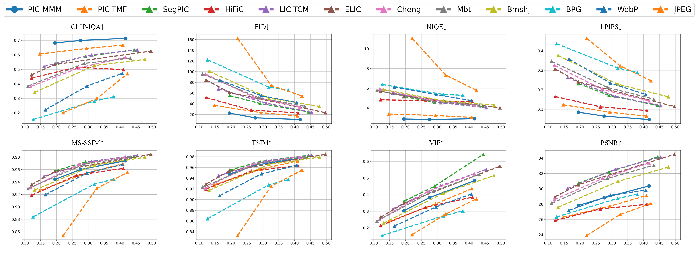

<!DOCTYPE html>
<html lang="en">
    <head>
        <meta charset="UTF-8">
        <title>PIC-M3
        <link rel="stylesheet" href="https://stackpath.bootstrapcdn.com/bootstrap/4.5.0/css/bootstrap.min.css" integrity="sha384-9aIt2nRpC12Uk9gS9baDl411NQApFmC26EwAOH8WgZl5MYYxFfc+NcPb1dKGj7Sk" crossorigin="anonymous">
        <link rel="stylesheet" href="https://cdnjs.cloudflare.com/ajax/libs/normalize/5.0.0/normalize.min.css">
        <link rel="stylesheet" href="./style.css">
        <link rel="apple-touch-icon" sizes="180x180" href="apple-touch-icon.png">
        <link rel="icon" type="image/png" sizes="32x32" href="favicon-32x32.png">
        <link rel="icon" type="image/png" sizes="16x16" href="favicon-16x16.png">
        <link rel="manifest" href="site.webmanifest">
        <link rel="mask-icon" href="safari-pinned-tab.svg" color="#5bbad5">
        <meta name="msapplication-TileColor" content="#da532c">
        <meta name="theme-color" content="#ffffff">
        <!-- Social Stuff -->
        <meta property="og:title" content="PIC-M³:Perceptual Image Compression with Multi-scale and Multi-modal Merging">
        <meta property="og:description" content="We combine Generative Adversarial Networks with learned compression to obtain a state-of-the-art generative lossy compression system.">
        <meta property="og:image" content="http://hific.github.io/social/thumb.jpg">
        <meta property="og:url" content="http://hific.github.io">
        <meta name="twitter:title" content="PIC-M³:Perceptual Image Compression with Multi-scale and Multi-modal Merging">
        <meta name="twitter:description" content="We combine Generative Adversarial Networks with learned compression to obtain a state-of-the-art generative lossy compression system.">
        <meta name="twitter:image" content="http://hific.github.io/social/thumb.jpg">
        <meta name="twitter:card" content="summary_large_image">
        <!-- Global site tag (gtag.js) - Google Analytics -->
        <script async src="https://www.googletagmanager.com/gtag/js?id=UA-169820266-1"></script>
        <script>
            window.dataLayer = window.dataLayer || [];
            function gtag() {
                dataLayer.push(arguments);
            }
            gtag('js', new Date());
            gtag('config', 'UA-169820266-1');
        </script>
    </head>
    <body>
        <div class="page-container">
            <div class="inner">
                <div class="title">
                    <h1>PIC-M<sup>3</sup>:Perceptual Image Compression with Multi-scale and Multi-modal Merge Networks</h1>
                </div>
                <div class="container-md">
                    <h2>Abstract</h2>
                    <p>
                        With the rapid growth of online media, the number of images on the internet has surged, posing significant challenges for data transmission and storage. This necessitates the development of efficient compression algorithms. While learned image compression (LIC) methods have made significant progress, they often overlook the viewer’s subjective experience. In contrast, perceptual image compression (PIC) techniques have gained attention for their focus on maintaining visual quality in line with human perception in compressed images. In this paper, we present a novel perceptual image compression network that integrates multi-modal information across multiple scales to enhance graphic perception and achieve superior perceptual compression results. We propose a fusion method called Multi-scale Multi-modal Merge Network (M<sup>3</sup>Net) to effectively combine information from different modalities. Our approach first fuses multi-modal information along the height dimension to capture relevant vertical context, then reduces dimensionality and collects horizontal context along the width dimension. By alternating these operations, the final pixels effectively capture the overall context of the image. This method significantly improves the perceived quality of images while reducing model size and runtime. Compared to using cross attention in place of our M<sup>3</sup>Net, our approach saves two-thirds of memory and halves the runtime, achieving comparable visual quality. We conducted extensive experiments to quantitatively assess the core components of our algorithm and demonstrate its effectiveness from various angles. Finally, we evaluated our algorithm using eight different visual quality assessment metrics, including state-of-the-art perceptual quality indices (e.g., CLIP-IQA, NIQE, and FID) and traditional PSNR. The results show that our PIC-M<sup>3</sup> network outperforms existing algorithms across most evaluation metrics.                    </p>
                </div>
                <hr/>
                <div class="alert alert-warning smartphone-alert" role="alert">
                    <p>Best viewed on a big screen.</p>
                    <p>On iPhone, to move the slider while zoomed in, tap and hold until you get haptic feedback!</p>
                </div>
                <div class="container-md">
                    <h2>Demo</h2>
                    <p class="tagline">
                        Interactive Demo comparing our method (PIC-M³) to JPG or BPG:
                    </p>
                </div>
                <div class="comparison-slider-wrapper outlined">
                    <div class="image-selector">
                        <!-- JS-generated -->
                        
                        
                        
                        
                        
                        
                        
                    </div>
                    <div class="comparison-slider noselect">
                        <div id="loading-placeholder" class="tall"></div>
                        <div id="right-imgs" showing="loading">
                        <!-- JS-generated img tag here -->
                        </div>
                        <div class="right-selector">
                            <div class="btn-group-vertical" role="group">
                                <!-- JS-generated -->
                                <button type="button" class="btn btn-dark btn-block active">JPG</button>
                            </div>
                        </div>
                        <div class="resize noselect" id="left-img">
                        <!-- JS-generated img tag with id "left" here -->
                        </div>
                        <div class="left-selector">
                            <div class="btn-group-vertical" role="group">
                                <button type="button" class="btn btn-dark btn-block disabled-button highlighted" id="left-info-button" disabled>PIC-M³ (Ours)</button>
                            </div>
                        </div>
                        <div class="img-info">
                            <div class="btn-group-vertical" role="group">
                                <button type="button" class="btn btn-sm btn-dark btn-block disabled-button" id="img-info-button" disabled>CLIC2020</button>
                            </div>
                        </div>
                        <div class="divider"></div>
                        <div class="divider-info">Loading...</div>
                    </div>
                    <div>
                        <div class="row no-gutters">
                            <div class="col-3">
                                <div class="bpp-bytes-sel">
                                    <div class="form-check">
                                        <input class="form-check-input" type="radio" name="bpp-bytes-radio" id="bytes" value="bytes" checked>
                                        <label class="form-check-label" for="bytes">Kilobyte (kB)
                                </label>
                                    </div>
                                    <div class="form-check">
                                        <input class="form-check-input" type="radio" name="bpp-bytes-radio" id="bpp" value="bpp">
                                        <label class="form-check-label" for="bpp">Bits per pixel (bpp)
                                </label>
                                    </div>
                                </div>
                            </div>
                            <div class="col-6">
                                <div class="image-selector">
                                    <!-- JS-generated -->
                                    
                                    
                                    
                                    
                                    
                                    
                                    
                                </div>
                            </div>
                            <div class="col-3 full-res-wrapper">
                                <a target="_blank" href="#" id="view-full-res" data-title="Shows the image 1:1, instead of fit to the window size.">View Full Res</a>
                            </div>
                        </div>
                    </div>
                </div>
                <div class="container-md centered-info paperthumbs">
                </div>
                <hr/>
                <div class="container-md">

                    <hr/>
                    <h2>Experiments Result</h2>
                    <div class="outlined">
                        <div class="caption">
                            <p>
                                The following shows different metrics on CLIC2020 and Kodak. 
                                Arrows in the plot titles indicate whether high (↑)or low (↓) values indicate a better score.
                            </p>
                            
                            <p>
                            </p>
                            
                            <p>
                                <!-- Based on the provided context, it can be observed from two figures that the comparison on the Kodak and CLIC2020 datasets highlights the performance of various methods. 
                                Specifically, our PIC-M³ demonstrates significantly superior performance in terms of NIQE, FID, and CLIP-IQA compared to the other methods. 
                                Notably, even though these methods operate at 2$\times$ to 4$\times$ higher bitrates than ours, PIC-M³ achieves comparable or even better performance. 
                                This superiority can be attributed to our dual guidance approach, which utilizes both text and segmentation maps. 
                                By leveraging these two modalities, our model is able to capture richer contextual information and finer details, leading to improved image quality and better alignment between visual and semantic content.
                                
                                In the comparison of VIF, FSIM, and MS-SSIM, our model does not perform the best compared to other methods, but the gap is not significant. 
                                This is primarily because these metrics focus on specific aspects that we cannot address simultaneously. 
                                For instance, VIF and FSIM emphasize the preservation of visual information and structural similarity, while MS-SSIM takes into account the sensitivity of the human visual system to different frequencies and contrasts, highlighting the structure and contrast information of images at various scales. Our method places greater emphasis on the text description area and the corresponding regions of the segmentation map. 
                                Consequently, this focus leads to improved compression quality in the targeted areas, but it may also result in overlooking the consistency of the overall structure and the preservation of background information.
                                
                                Our method shows a significant shortfall on the PSNR metric, but this outcome was anticipated. Given that our PIC prioritizes perceptual quality, it is not surprising that the PSNR metric falls short compared to the LIC method in this trade-off. Nonetheless, it is important to highlight that our approach still surpasses both our baseline model HiFiC and the text-guided model, PIC-TMF.            </p> -->
                    </p>
                        </div>
                    </div>
                    <h2>Special Thanks</h2>
                    <p>
                        This site uses the foundational framework/resources from <a target="_blank" href="https://hific.github.io/">HiFiC</a>. Special thanks to them.
                    </p>
                </div>
            </div>
        </div>
        <script src='https://cdnjs.cloudflare.com/ajax/libs/jquery/3.2.1/jquery.min.js'></script>
        <script src="./script.js"></script>
    </body>
</html>
